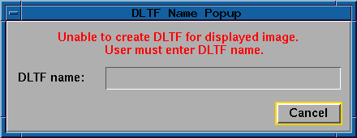

5.3.5 Save Mapping
The save mapping function allows the user to save the currently
displayed mapping to a display and LUT file (DLTF). The LUT
is saved in the DLTF associated with the first band of the
currently displayed image. A separate LUT is stored for each
band of the displayed image and the band number associated with
the LUT is also saved. If the DLTF exists, a new entry is
added. If the DLTF does not exist, the save mapping function
will create it. If the user does not have permission to write
to the file or is unable to create the file, a popup panel
with an error message is displayed and the user is required to
enter a DLTF name.

- DLTF Entry Name:
- A text field which allows the user to enter a name to be associated with
the LUT. This name may contain up to 12 characters.
- Description:
- A text field which allows the user to enter a text string to help further
describe the DLTF entry. This description may contain up to 80 characters.
- Apply:
- Read the currently defined mapping and store it in the appropriate DLTF
with the entry name specified in the DLTF entry name field.
- Cancel:
- Close the save mapping panel without saving the current mapping to a DLTF.
-

DLTF Name (Popup Panel):
- A text field which allows the user to enter a DLTF name. This is
necessary if the user does not have write access to the DLTF of the
displayed image or for any other reason is unable to create a DLTF
for the displayed image. This name may be entered either as a host
name or as an LAS name. The DLTF name is accepted and verified when the
user presses return.
- Cancel (Popup Panel):
- Close both the DLTF popup panel and the save mapping panel without saving
the current mapping to a DLTF.